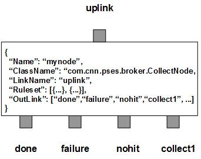

CollectNode listens to an input XQueue for JMS messages and assigns them to various destinations as the requests according to their content and preconfigured rulesets. It then collects the responses for each outstanding requests and routes them to their next destinations. It has two types of outlinks, position-fixed and non-fixed. There are three position-fixed outlinks: done for all completed requests, failure for the messages failed in the collecting process, nohit for those messages not covered by any rulesets. They are also called the final exits since all the incoming messages have to exit through one of them at the end. The non-fixed outlinks are called collectibles to fulfill requests.
CollectNode also contains a number of predefined rulesets. These rulesets categorize requests into non-overlapping groups. Therefore, each rule defines a unique request group. The ruleset also specifies the the initial outlink for the group. It may also contains a task list that defines the association between each task and its next outlink. Therefore a ruleset is just like a workflow. For those messages falling off all defined rulesets, CollectNode always creates an extra ruleset, nohit, to handle them. All the nohit requests will be routed to nohit outlink.
For each incoming request, CollectNode sends it to its associated worker via the initial outlink. Then CollectNode frequently checks the response for each outstanding requests. The response is supposed to have the status and the requested content. Based on its status, the response as a JMS message will be transferred to its next outlink according to the preconfigured task list. A task list is just like a workflow. It controls which outlink is the next at each step. A task contains three outlinks for different scenarios: success, failure and exception. By default, these outlinks are same as the first 3 non-collectible outlinks, respectively. But they can be overridden by any valid outlinks as defined for the task. Once a response has been collected, CollectNode will evaluate its return code and decides which outlink is the next. The message will be routed to that outlink according to the task list. CollectNode also supports branches. In case of failure or exception, if its outlink is a collectible and it is not the same as the success outlink, CollectNode will find the first leading task with the same outlink on success for the branch support. As the result, all the tasks in between will beskipped. Otherwise, CollectNode will just ignore any failure or exception, and proceed on the current task as if the previous task is a success. A leading task of a branch is the task immediately following any exit task. An exit task is the task with non-collectible outlink on success. Therefore a request message will be able to go through a list of outlinks step by step as configured.
As an option, a task can also specify a single data field of the message to be formattable. In order to do that, you need to define a single Template and/or a single TextSubstitution for that field. The message will be formatted before it is put to next outlink on success. If it is on failure, or exception, the formatter rule will be bypassed. However, a task may define an ErrorCode as the indication for the failure or exception scenario. In this case, CollectNode will store the defined ErrorCode into the ReturnCode property of the message before putting it into the non-collectible failure outlink. Since the ruleset itself is the default task, it also can have the data field, the template and the substitution defined. If all tasks have completed without errors, the ReturnCode property of the message will be reset to null before its final exit.
In an MT env, it may get deadlocked due to circular dependencies among the task outlinks. CollectNode implements walk-sweep method to collect messages with circular dependencies. But it may take long time for an outlink to have vacancies. If a new message can not find vacancy in its next task queue, CollectNode will keep retry up to 10 times and then roll the message back to the input XQueue. The message will be dequeued again and the same format rule will be applied once more before to put it to its task queue. Therefore, please make sure the first format rule of a ruleset is stateless. If you have a stateful format rule as the default task, please create a stateless task and add the new task before it.
You are free to choose any names for the three fixed outlinks. But CollectNode always assumes the first outlink for out, the second for failure and the third for nohit. The rest of the outlinks are collectibles for responses.
By design, CollectNode is supposed to use collectible outlinks to fulfill reqeusts. But sometimes, the nohit outlink may be used for cascaded requests. This overloading role will cause conflicts with the exception handling on tasks. For example, if a task gets an exception on the message, CollectNode will terminate the workflow and routes the message to the nohit outlink. Since the message has not been fully processed yet, it may cause issues downstream. In this case, the default outlink for exceptions can be reset to the failure outlink on the next task. Hence any exception will have the message routed to the failure outlink rather than the overloaded nohit outlink.
Apart from the common properties, there are three implementation specific properties for CollectNode.
| Property Name | Data Type | Requirement | Description | Examples |
|---|---|---|---|---|
| RCField | string | optional | name of the field to store the return code | (default: ReturnCode) |
| TidField | string | optional | name of the field to store the task id |
The collect operation is executed via the pre-defined rulesets. Therefore, the configuration of the rulesets is critical to the operations of CollectNode. Here are complete properties of rulesets for CollectNode.
| Property Name | Data Type | Requirement | Description | Examples |
|---|---|---|---|---|
| Name | alphanumeric with no spaces | mandatory | name of the ruleset | event |
| PreferredOutLink | alphanumeric with no spaces | mandatory | name of the preferred outlink | eval |
| FieldName | alphanumeric with no spaces | optional | name of the property to be formatted as the request | |
| Template | string | optional | template to build the request | |
| Substitution | string | optional | text substitution on the request | |
| ErrorCode | integer | optional | error code to set in case of failuer | |
| Timeout | integer | optional | seconds of timeout | 120 (default: 0) |
| NextTask | list | optional | list of tasks | see example |
| JMSPropertyGroup | list | optional | list of pattern groups on properties to select messages | see example |
| XJMSPropertyGroup | list | optional | list of pattern groups on properties to exclude messages | see example |
| PatternGroup | list | optional | list of pattern groups on body to select messages | see example |
| XPatternGroup | list | optional | list of pattern groups on body to exclude messages | see example |
| StringProperty | map | optional | for setting message properties on its final exit | see example |
{
...
"NextTask": [{
"Success": "script",
"FieldName": "body",
"Template": "/home/damadmin/bin/qbSend.sh ##AssetID## 1",
"ErrorCode": "5"
}],
...
}
where Success specifies the outlink if the previous task is successful.
Before routing the message to script, its body will be formatted with the
given tempalte. The variable, ##AssetID##, will be replaced by the value of
the message property of AssetID. It has not defined the outlink for failure
nor exception. By default, they share the same outlinks as the node. Therefore,
if the previous task fails, the message will be routed to failure outlink
without being formatted. ErrorCode is to overwrite the ReturnCode property of
the message if it exits at the outlink of either failure or exception (nohit).
As the rule of thumb, a message going out via any position-fixed outlink will not be formatted by the task. So the node will ignore any format part if the exit is one of the position-fixed outlink. If the exit outlink is the first position-fixed outlink, the ReturnCode property of the message will be removed to keep it clean. If a message falls into a rule of either nohit or preferred, there is no any task invoked on it. You can still set ReturnCode property by defining it in StringPropery for the rule. This way, you can have all messages with completed tasks exit clean without ReturnCode property set. The rest of messages, such as failed, bypass, nohit, will have its ReturnCode property set.
In fact, CollectNode is just like a task manager to dispatch the message and the task to each of the workers. Once the task is completed, it collects the result and goes to the next task until the workflow ends. The real jobs are done by those workers. So it is very important to line up all the workers with the node.
Here is an example of CollectNode:
{
"Name": "node_cmd_collect",
"ClassName": "org.qbroker.node.CollectNode",
"Operation": "collect",
"LinkName": "done",
"Capacity": "32",
"DisplayMask": "0",
"XAMode": "1",
"Debug": "31",
"Ruleset": [{
"Name": "ArchiveToProxy",
"PreferredOutLink": "rest",
"JMSPropertyGroup": [{
"AssetID": "^\\d+$",
"Type": "^8$",
"status": "^(OCCURRED|Occurred)$"
}],
"FieldName": "body",
"Template": "TYPE=8&MEDIA_REPOSITORY=MIRA&MEDIA_ID_TYPE=DAMID&MEDIA_ID=##AssetID##&SOURCE_DAM_ID=##AssetID##&TARGET_CNN_ID=##AssetID##&cnnId=##AssetID##&TARGET_SITE_ID=ATL&messageType=ArchiveToProxyServiceRequest&requestCommandTypeName=ARCHIVE_TO_PROXY_SERVICE&neededBy=##JMSTimestamp##&priority=650&script=true&sleepTime=0&submitCount=1&userId=damadmin&IPEPSK=xxxx&TYPE_CATEGORY=RAW&format=text/html"
},{
"Name": "InsertAsset",
"PreferredOutLink": "script",
"JMSPropertyGroup type="ARRAY"": "
"AssetID": "^\\d+$",
"Type": "^1$",
"DirName": "^/dam/vol[12]",
"status": "^(Disabled|DISABLED)$"
}],
"FieldName": "body",
"Template": "/bin/sh -c \"/bin/ls ##DirName##/1/transformed/##AssetID##*.err 2>/dev/null\""
"NextTask": [{
"Success": "eval",
"FieldName": "RuleName",
"Template": "filename"
},{
"Success": "failure",
"Failure": "script"
},{
"Success": "script",
"FieldName": "body",
"Template": "/bin/sleep 120"
},{
"Success": "script",
"FieldName": "body",
"Template": "/bin/sh -c \"/bin/ls ##DirName##/1/transformed/##AssetID##*.avi 2>/dev/null\""
},{
"Success": "eval",
"FieldName": "RuleName",
"Template": "filename"
},{
"Success": "script",
"FieldName": "body",
"Template": "/opt/CNNipe/mam/dam/fs/bin/dinsert -f ##AssetID## 1 ##FileName##",
"Failure": "rest"
},{
"Success": "rest",
"FieldName": "body",
"Template": "cnnId=##AssetID##&TARGET_SITE_ID=ATL&messageType=AssetStatusRequest&requestCommandTypeName=DAM_GET_ASSET_STATUS&neededBy=##JMSTimestamp##&priority=650&script=true&sleepTime=0&submitCount=1&userId=damadmin&IPEPSK=xxxx&TYPE_CATEGORY=RAW&format=text/html"
},{
"Success": "script",
"FieldName": "body",
"Template": "/home/damadmin/bin/qbSend.sh ##AssetID## 1"
},{
"Success": "log"
},{
"Success": "rest",
"FieldName": "body",
"Template": "cnnId=##AssetID##&TARGET_SITE_ID=ATL&messageType=AssetStatusRequest&requestCommandTypeName=DAM_GET_ASSET_STATUS&neededBy=##JMSTimestamp##&priority=650&script=true&sleepTime=0&submitCount=1&userId=damadmin&IPEPSK=xxxx&TYPE_CATEGORY=RAW&format=text/html"
},{
"Success": "script",
"FieldName": "body",
"Template": "/home/damadmin/bin/qbSend.sh ##AssetID## 1"
}]
},{
"Name": "AssetStatus",
"PreferredOutLink": "rest",
"JMSPropertyGroup": [{
"AssetID": "^\\d+$",
"Type": "^1$",
"DirName": "^/dam/vol[12]",
"status": "^(NORMAL|Normal)$"
}],
"FieldName": "body",
"Template": "cnnId=##AssetID##&TARGET_SITE_ID=ATL&messageType=AssetStatusRequest&requestCommandTypeName=DAM_GET_ASSET_STATUS&neededBy=##JMSTimestamp##&priority=650&script=true&sleepTime=0&submitCount=1&userId=damadmin&IPEPSK=xxxx&TYPE_CATEGORY=RAW&format=text/html"
"NextTask": [{
"Success": "script",
"FieldName": "body",
"Template": "/home/damadmin/bin/qbSend.sh ##AssetID## 1"
}]
}],
"OutLink": [
"log",
{
"Name": "failure",
"Capacity": "32",
"Partition": "16,4"
},{
"Name": "nohit",
"Capacity": "32",
"Partition": "16,4"
},{
"Name": "rest",
"Capacity": "32",
"Partition": "16,16"
},{
"Name": "script",
"Capacity": "128",
"Partition": "64,32",
},{
"Name": "eval",
"Capacity": "128",
"Partition": "64,32"
}
]
}